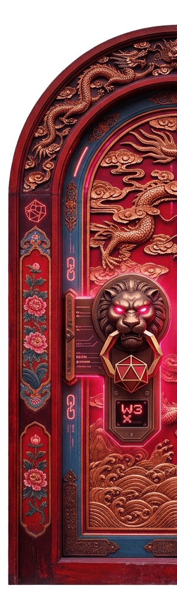
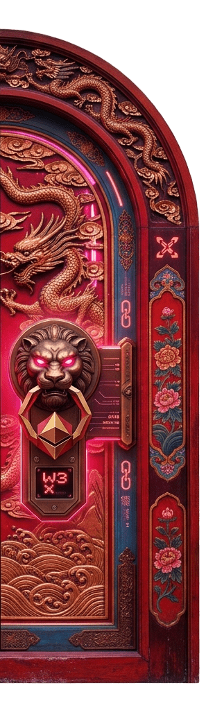

信财神
财富是善愿，不是贪婪。接财神，是接一份对未来的期许。


全球华人第一文化 Meme IP
链上的赛博财神庙 · 属于社区的数字香火
在纽约的地铁里，在吉隆坡的茶餐室，在伦敦的唐人街，只要春节一到，总有一句"恭喜发财"响起。
它不需要翻译，不需要解释。
我们不发明新符号，我们唤醒一个古老符号。把千年财神信仰，带进 Web3，带进 Meme，带进全球华人的社区。
只要有华人的地方，就有财神、红包、春联、"恭喜发财"。文化范围 = 全球华人半径。
财神不只是钱，是好运、团圆、希望、开门红——中国人对美好生活最直白的祝愿。
"财神到"三个字，本身就是祝福、表情包、一首歌、一场仪式，天生适合传播。
在 Web3 世界里，$财神DAO 不只是一串代码，
而是传统财神文化在链上的映射。
财神爷不再是庙堂之上的塑像，而是社区里每一位 持有者、传播者、建设者 的 "精神股东"。
财富是善愿，不是贪婪。接财神，是接一份对未来的期许。
每一次转发，都是上香；每一次分享，都是给财神爷添火。
财神偏爱团结的社区。长期主义，社区自律，彼此成就。
谁砸财神，财神就绕过谁家走
这句话不是市场操纵，而是社区文化自律。它约束的是行为，守护的是共识。
你接财神进门，就要好好供着。
坚定持有，传播共识，建设社区，就是给财神爷上香。
$财神DAO 的 IP 系统由四块构成，每一块都指向同一个词：财神到。
社区集结号。关键节点播放，形成条件反射：主题曲一响，财神到现场。
红金配色、财神形象、元宝、红包、祥云、铜钱、鞭炮、庙会。所有视觉指向“财神到”。
接财神 · 不可砸财神 · 财神到财运到 · 每一次传播，都是给财神上香。
每日一接 · 每周一香 · 每月一福 · 春节全球华人线上财神庙会。
让"财神到"三个字铺满全球华人社群，让更多人听见、看见、记住。
把传播与共识绑定，让每一次分享，都是把财神请进更多人的钱包。
从 Meme 走向文化符号，让 $财神DAO 成为华人 Web3 世界的精神符号。
财神不渡无缘之人，但财神偏爱团结的社区。三种方式，任选其一：
加入社群，每日一接。让财神住进你的钱包，也让你的钱包住进共识。
转发内容，请财神进群。每一次传播，都是给财神上香，也是为自己积攒福报。
长期持有，参与建设。只迎不砸，就是这个社区最稀缺的品格。
读完 6 章内容，即可生成属于你的财神符。